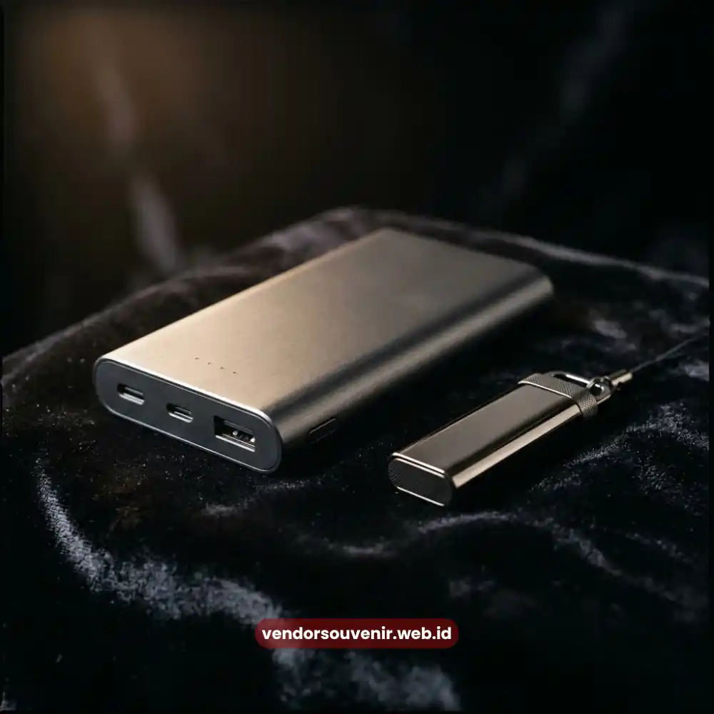
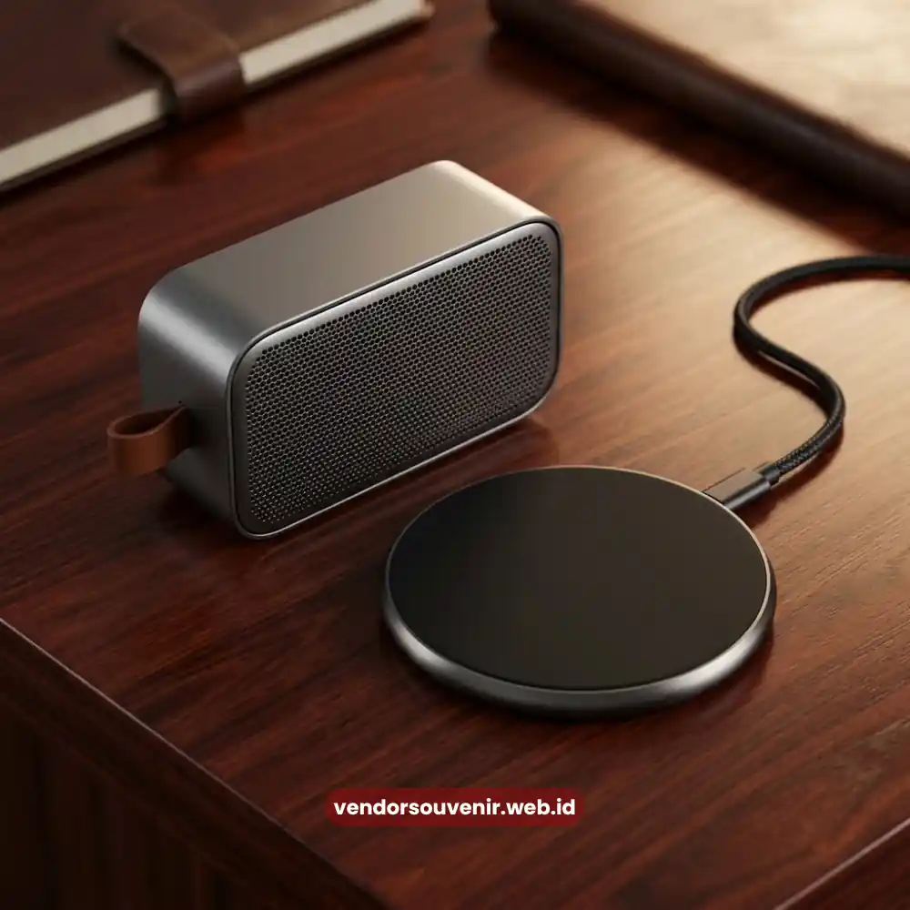

Daftar Isi
Souvenir teknologi kantor Palembang adalah merchandise berbasis gadget seperti power bank dan flashdisk custom yang dipilih karena fungsional dan modern.
Panduan ini membahas jenis souvenir teknologi kantor yang populer, cara memilih yang berkualitas, serta tips penggunaannya agar branding perusahaan semakin maksimal.
Apa Itu Souvenir Teknologi Kantor?
Souvenir teknologi kantor adalah kategori merchandise korporat yang berbentuk perangkat elektronik ringan, dirancang untuk mendukung aktivitas kerja sehari-hari sekaligus menjadi media branding perusahaan.
Souvenir jenis ini semakin populer di Palembang karena dianggap lebih relevan dengan kebutuhan digital masa kini dibandingkan souvenir konvensional.
Untuk Siapa Souvenir Teknologi Kantor Cocok?
Souvenir teknologi kantor cocok untuk klien bisnis, mitra kerja, peserta seminar teknologi, maupun karyawan internal yang membutuhkan perangkat pendukung kerja sehari-hari.
Kebutuhan seperti pengisian daya portabel atau penyimpanan data menjadi alasan utama mengapa kategori ini sangat diminati di lingkungan korporat.
Apa Saja Jenis Souvenir Teknologi Kantor yang Populer?
Jenis souvenir teknologi kantor yang populer meliputi power bank custom, flashdisk dengan desain logo perusahaan, speaker bluetooth portabel, mouse wireless, dan charger multifungsi.
Kelima jenis ini banyak dipilih karena ukurannya ringkas dan penggunaannya praktis dalam aktivitas sehari-hari penerima.
Apa Kelebihan Power Bank Custom sebagai Souvenir?
Kelebihan power bank custom sebagai souvenir adalah tingkat penggunaannya yang tinggi dalam aktivitas sehari-hari, sehingga logo perusahaan memiliki eksposur berulang setiap kali digunakan.
Apa Kelebihan Flashdisk Custom sebagai Souvenir?
Kelebihan flashdisk custom sebagai souvenir adalah bentuknya yang ringkas dan fungsinya yang relevan untuk kebutuhan penyimpanan data, sehingga sering dibawa dan digunakan penerima dalam jangka waktu panjang.

Perangkat Elektronik Souvenir Kantor Custom untuk Perusahaan
Bagaimana Cara Memilih Souvenir Teknologi yang Berkualitas?
Cara memilih souvenir teknologi yang berkualitas adalah dengan memastikan komponen elektronik berasal dari pemasok terpercaya dan meminta sampel produk sebelum pemesanan massal.
Selain itu, cek daya tahan baterai atau kapasitas penyimpanan untuk memastikan sesuai spesifikasi yang dijanjikan vendor sebelum melakukan pembayaran.
Apa yang Harus Diperiksa Sebelum Memesan dalam Jumlah Besar?
Hal yang harus diperiksa sebelum memesan dalam jumlah besar meliputi garansi produk, kesesuaian spesifikasi teknis, dan kualitas hasil cetak logo pada permukaan perangkat.
Pastikan juga vendor memiliki kebijakan retur yang jelas apabila ditemukan produk cacat pada saat pengiriman massal.
Berapa Kisaran Harga Souvenir Teknologi Kantor?
Kisaran harga souvenir teknologi kantor bervariasi tergantung jenis perangkat, kapasitas, dan merek komponen yang digunakan oleh vendor.
Secara umum, semakin tinggi spesifikasi perangkat seperti kapasitas power bank atau flashdisk, semakin tinggi pula harga per unitnya.
Perusahaan disarankan membandingkan penawaran dari beberapa vendor souvenir teknologi di Palembang sebelum menentukan pilihan akhir.
Kesalahan Umum saat Memilih Souvenir Teknologi
Kesalahan umum saat memilih souvenir teknologi antara lain tidak memeriksa kualitas komponen sebelum pemesanan massal dan memilih produk hanya berdasarkan harga termurah tanpa memperhatikan kualitas.
Kesalahan lain adalah mengabaikan kesesuaian ukuran logo dengan bidang cetak perangkat, serta tidak mempertimbangkan masa garansi produk elektronik yang diberikan vendor.
Tips Memilih Souvenir Teknologi yang Tepat Sasaran
Tips memilih souvenir teknologi yang tepat sasaran meliputi penyesuaian jenis perangkat dengan kebiasaan penerima dan pemilihan warna yang netral agar mudah dipadukan dengan gaya penggunaan sehari-hari.
Pastikan juga kemasan produk turut mencerminkan standar eksklusif perusahaan agar kesan pertama penerima terhadap brand semakin positif.

Souvenir Teknologi Korporat Premium siap kirim
FAQ Souvenir Teknologi Kantor Palembang
Apa itu souvenir teknologi kantor?
Souvenir teknologi kantor adalah merchandise korporat berbentuk perangkat elektronik ringan seperti power bank dan flashdisk yang dicetak dengan logo perusahaan.
Apakah souvenir teknologi bisa dicustom dengan logo perusahaan?
Ya, sebagian besar souvenir teknologi kantor dapat dicustom dengan logo perusahaan melalui teknik cetak atau ukir laser sesuai jenis materialnya.
Jenis souvenir teknologi apa yang paling sering dipilih?
Jenis souvenir teknologi yang paling sering dipilih adalah power bank custom dan flashdisk custom karena tingkat penggunaannya yang tinggi dalam aktivitas sehari-hari.
"Souvenir teknologi kantor Palembang menawarkan nilai fungsional yang tinggi sekaligus menjadi media branding yang efektif bagi perusahaan."
Pemilihan jenis perangkat, pengecekan kualitas komponen, dan kesesuaian anggaran menjadi kunci utama sebelum melakukan pemesanan massal.
Untuk melengkapi kebutuhan souvenir korporat lainnya, simak juga panduan Souvenir Kantor Eksklusif Palembang.
Butuh Souvenir Teknologi Korporat di Palembang?
Dapatkan penawaran terbaik untuk power bank, flashdisk, dan gadget custom logo perusahaan Anda.
Lihat Katalog Lengkap & Harga Paket SouvenirKonsultasikan budget dan kebutuhan custom Anda langsung melalui WhatsApp.
Maroon Souvenir
Partner Corporate Gift terpercaya di Indonesia. Berpengalaman melayani ratusan perusahaan sejak 2018.
Lihat Portofolio Kami